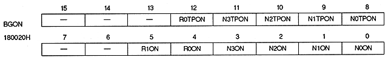
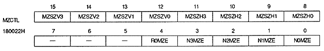

Transparent enable bit : Transparent enable bit (N0TPON, N1TPON, N2TPON, N3TPON, R0TPON)
N0TPON | 180020H | bit 8 | NBG0 (or RBG1) |
N1TPON | 180020H | bit 9 | NBG1 (or EXBG) |
N2TPON | 180020H | bit 10 | NBG2 |
N3TPON | 180020H | bit 11 | NBG3 |
R0TPON | 180020H | bit 12 | for RBG0 |
xxTPON | Processing |
0 | Enable transparent code (transparent code dots will be transparent) |
1 | Disable transparent code (dots in transparent code are displayed according to their data values. ) |
N0ON | 180020H | bit 0 | NBG0 |
N1ON | 180020H | bit 1 | NBG1 |
N2ON | 180020H | bit 2 | NBG2 |
N3ON | 180020H | bit 3 | NBG3 |
R0ON | 180020H | bit 4 | for RBG0 |
R1ON | 180020H | bit 5 | for RBG1 |
xxON | Processing |
0 | Cannot display (does not access VRAM for display) |
1 | Can view |
